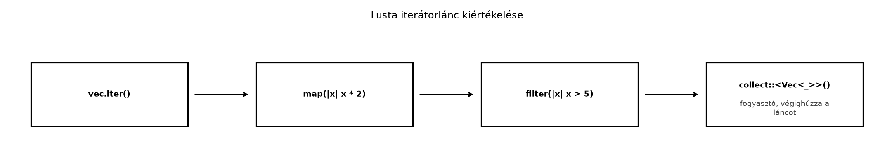

C++-ban egy vektor elemeinek szűrése és transzformálása gyakran kézi
ciklussal történik: indexelünk, push_back-et hívunk,
ellenőrizzük a határokat, és közben könnyen elkövetünk off-by-one hibát
vagy véletlenül módosítjuk a bejárt konténert. A C++20
std::ranges már kínál lusta view-kat, de a Rust iterátorai
ezt a szemléletet a nyelv szerves részeként, trait-alapú, egységes
felülettel valósítják meg. A Rust iterátorlánc kifejező, lusta, és a
fordító a borrow checkerrel garantálja, hogy az iteráció közben nem
érvénytelenítjük a gyűjteményt. Ebben az alfejezetben megismerjük az
Iterator trait-et, a három alapvető iterátortípust, az
adaptereket, és saját iterátort írunk az rkv kulcsainak bejárására.
Definíció. Az Iterator trait egyetlen
kötelező metódust ír elő: a next-et, amely
Option<Self::Item>-et ad vissza. Az Item
asszociált típus az iterátor által szolgáltatott elem típusa. A trait
számos további metódust (adaptereket és fogyasztókat) default
implementációval biztosít, amelyek a next-re épülnek.
pub trait Iterator {
type Item;
fn next(&mut self) -> Option<Self::Item>;
// map, filter, fold, collect, ...
}Definíció. A lusta adapter (lazy adapter)
olyan iterátor-transzformáció, amely a next hívásakor végzi
el a számítást. A fogyasztó (consumer) olyan metódus, amely
végighúzza az iterátort, és értéket, gyűjteményt vagy mellékhatást állít
elő. A map, filter, enumerate,
zip, take, skip,
flat_map adapterek; a collect,
fold, count, sum,
for_each és a for ciklus fogyasztók. Amíg
nincs fogyasztó, az adapterlánc egyetlen elemet sem dolgoz fel.
Szabály. A for ciklus szintaktikai
cukor: a for x in iterable kifejezés az
iterable értéken meghívja az
IntoIterator::into_iter-et, majd addig hívja a kapott
iterátor next-jét, amíg az Some-ot ad. A
&v és &mut v is implementálja az
IntoIterator-t, így a for &x in &v a
v.iter()-nek, a for x in &mut v a
v.iter_mut()-nak felel meg.
Szabály. Három alapvető iterátortípus létezik:
iter(): &T elemeket ad, a gyűjteményt
nem fogyasztja, a kollekció kölcsönzött marad.iter_mut(): &mut T elemeket ad, a
gyűjteményt nem fogyasztja. A kölcsönzési szabály a
gyűjteményre vonatkozik (amíg az iterátor él, a gyűjtemény
kizárólagosan kölcsönzött); az elemek &mut referenciái
viszont különböző elemekre mutatnak, ezért egyszerre élhetnek, mint a
let refs: Vec<&mut i32> = v.iter_mut().collect();
példában. Ez nem szabálysértés.into_iter(): a jelentése a receiver
típusától függ. A Vec<T> értéken hívott
v.into_iter() T elemeket ad, és a gyűjteményt
elfogyasztja (utána v nem használható); a
(&v).into_iter() ugyanaz, mint a v.iter():
&T elemeket ad, és v megmarad; a
(&mut v).into_iter() pedig &mut T
elemeket.Szabály. A collect az iterátort
B típusú gyűjteménnyé alakítja, ha B
implementálja a FromIterator<Self::Item> trait-et. Ha
az elemek Result<T, E> típusúak, akkor a
Result<Vec<T>, E> is implementálja a
FromIterator-t: a gyűjtés az első Err-nél
leáll, és Err-t ad; ha minden elem Ok, akkor
Ok(Vec<T>) lesz az eredmény. Hasonlóan működik
Option esetén is.

A fenti ábra azt mutatja, hogy az adapterek csak egy leírást építenek
fel; a tényleges munka a collect hívásakor történik meg,
amikor a fogyasztó sorban meghívja a next-et a lánc
végén.
C++20 ranges segítségével lusta view-kat fűzhetünk össze:
#include <iostream>
#include <ranges>
#include <vector>
int main() {
std::vector<int> v = {1, 2, 3, 4, 5, 6};
auto result = v
| std::views::filter([](int x) { return x % 2 == 0; })
| std::views::transform([](int x) { return x * x; });
for (int x : result) {
std::cout << x << ' ';
}
}Rustban ugyanez idiomatikusan:
fn main() {
let v = vec![1, 2, 3, 4, 5, 6];
let result: Vec<_> = v
.iter()
.filter(|&&x| x % 2 == 0)
.map(|&x| x * x)
.collect();
println!("{result:?}");
}A különbség lényeges: a C++ ranges view-k a
begin()/end() és a koncepciók köré épülnek,
míg a Rust az Iterator trait egységes next()
metódusára. A Rust verzióban a closure-ök explicit mintát kapnak:
v.iter() &i32 elemeket ad, a
filter predikátuma ezért &&i32-et kap
(&&x), a map pedig
&x-et. A C++-ban a lambda paramétere int
(a view értékként adja át az elemet). A Rust collect
típusinferencia a turbofish (::<Vec<_>>)
segítségével egyértelmű, míg a C++-ban C++23-ig explicit konstruktor
vagy std::ranges::to kellett. Mindkét megoldás zero-cost
absztrakció: a fordító inline-eli a hívásokat, és a generált kód
gyakorlatilag megegyezik a kézi cikluséval.
Result gyűjtéseA lustaság megértéséhez nézzünk egy hibás kódot, amelyben nincs fogyasztó:
fn main() {
let v = vec![1, 2, 3, 4, 5];
v.iter().map(|x| {
println!("{x}");
x * 2
});
}Ez a program nem ír ki semmit. A map
csak egy új iterátort ad vissza, de a next-et soha nem
hívja meg senki, mert nincs fogyasztó. A lánc eredményét el kellene
tárolni, vagy meg kell hívni a collect-et.
Helyes változat:
fn main() {
let v = vec![1, 2, 3, 4, 5];
let doubled: Vec<_> = v.iter().map(|&x| x * 2).collect();
println!("{doubled:?}");
}Most a collect végighúzza az iterátort, és a
map lefut minden elemen. Várt kimenet:
[2, 4, 6, 8, 10].
A Result elemeket tartalmazó iterátor gyűjtése gyakori
hibaforrás. Tekintsük a következő függvényt:
fn parse_all(items: Vec<&str>) -> Result<Vec<i32>, std::num::ParseIntError> {
items
.iter()
.map(|s| s.parse::<i32>())
.collect::<Result<Vec<_>, _>>()
}
fn main() {
let ok = parse_all(vec!["1", "2", "3"]);
let err = parse_all(vec!["1", "x", "3"]);
println!("{ok:?}");
println!("{err:?}");
}A collect a FromIterator implementációt
használja: ha minden parse Ok-t ad, akkor
Ok(vec![1, 2, 3]); ha az egyik Err, akkor a
gyűjtés leáll, és Err(ParseIntError) lesz az eredmény. Itt
a turbofish nem kötelező: a függvény visszatérési
típusa (Result<Vec<i32>, ParseIntError>) már
meghatározza a célt, így a rövidebb
items.iter().map(|s| s.parse::<i32>()).collect() alak
is lefordul (ellenőrzött kimenet: Ok([1, 2, 3]) és
Err(ParseIntError { kind: InvalidDigit })). Típusannotációt
akkor kell adni, ha a cél típusát semmi sem rögzíti:
// error[E0283]: type annotations needed
let result = [1, 2, 3].iter().map(|x| x + 1).collect();Itt a collect célja kétértelmű
(Vec<i32>, HashSet<i32>,
VecDeque<i32> stb. is lehetne), ezért a turbofish
(collect::<Vec<_>>()) vagy a változó típusának
annotálása kell.
Ebben a laborban saját iterátort implementálunk az
rkv-core crate-ben, amely a memóriabeli tároló kulcsainak
kölcsönző bejárását teszi lehetővé. A cél egy Keys típus,
amely az Iterator trait-et implementálja, és egy új
Store::iter_keys() metódus ezt adja vissza. A már létező
Store::keys() -> Vec<String> (Az rkv mintaprojekt indítása: Cargo-workspace és első
CLI) viselkedése nem változik: továbbra is minden kulcsot ad, az
üres értékűeket is.
Munkakönyvtár: ~/rust-labor/rkv (a
workspace gyökere). A kiinduló állapot a Trait
objektumok és dinamikus diszpécs és a Closure-ök: Fn, FnMut, FnOnce ellenőrzési pontja. A
Store (a MemStore alias mögötti típus) az
rkv-core/src/store/mod.rs-ben él, belső tárolója
data: HashMap<String, Vec<u8>>; új típust nem
hozunk létre, a meglévőt bővítjük. A Store::new() az rkv mintaprojekt indítása: Cargo-workspace és első
CLI óta létezik.
A Keys struct egy meglévő hash_map::Keys
iterátort csomagol be, hogy saját, &str elemű típust
adjon:
Kódblokk — fájl: rkv-core/src/store/mod.rs ·
művelet: beillesztés az impl Store blokk elé; a fájl
elejére use std::collections::hash_map; · ellenőrzés:
cargo build -p rkv-core
/// A tároló kulcsainak kölcsönző bejárása (minden kulcs, az üres értékűek is).
pub struct Keys<'a> {
inner: hash_map::Keys<'a, String, Vec<u8>>,
}
impl<'a> Iterator for Keys<'a> {
type Item = &'a str;
fn next(&mut self) -> Option<Self::Item> {
self.inner.next().map(|k| k.as_str())
}
}A hash_map::Keys iterátor next metódusa
Option<&String>-et ad; a map ezt
alakítja Option<&str>-ré. Az élettartam
'a a Store belső HashMap-éhez
kötődik, így a visszaadott referenciák addig érvényesek, amíg a tároló
kölcsönzése él.
Az iter_keys metódus az iterátort adja, a régi
keys pedig mostantól erre épül (a viselkedése azonos
marad):
Kódblokk — fájl: rkv-core/src/store/mod.rs ·
művelet: az impl Store blokkba új iter_keys, a
meglévő keys törzsének cseréje · ellenőrzés:
cargo test -p rkv-core store
/// Kulcsok kölcsönző bejárása, allokáció nélkül.
pub fn iter_keys(&self) -> Keys<'_> {
Keys {
inner: self.data.keys(),
}
}
/// Az összes kulcs (rendezetlen) listája: a `Keys` iterátorra épül.
pub fn keys(&self) -> Vec<String> {
self.iter_keys().map(str::to_owned).collect()
}Az iter_keys visszatérési típusa
Keys<'_>: az elision szabályai szerint a visszatérési
élettartam az &self élettartamához kötődik.
Most használjuk az iterátort a Storage trait
list metódusának memóriabeli megvalósításában (Trait-ek és generikusok: sablonok és concepts
helyett). A korábbi, Vec<String>-et gyártó
közbenső lépés helyett a lánc közvetlenül a kölcsönző iterátoron
fut:
Kódblokk — fájl: rkv-core/src/storage.rs ·
művelet: a Storage for MemStore list
metódusának cseréje · ellenőrzés:
cargo test -p rkv-core storage
fn list(&self, prefix: Option<&str>) -> Result<Vec<(String, Vec<u8>)>> {
let mut items: Vec<_> = self
.iter_keys()
.filter(|k| prefix.is_none_or(|p| k.starts_with(p)))
.filter_map(|k| MemStore::get(self, k).map(|v| (k.to_owned(), v.clone())))
.collect();
items.sort_by(|a, b| a.0.cmp(&b.0));
Ok(items)
}Ez egy tipikus iterátorlánc: szűrés, transzformáció, gyűjtés. A
filter csak a prefixet tartalmazó kulcsokat engedi tovább,
a filter_map kulcs–érték párt épít, a collect
pedig Vec-et; a végén rendezünk, mert a
HashMap bejárási sorrendje nem meghatározott.
Végül tesztek az iter_keys-re és arra, hogy az üres
értékű kulcs is szerepel a keys és a list
eredményében:
Kódblokk — fájl: rkv-core/src/store/mod.rs ·
művelet: beillesztés a meglévő mod tests blokkba ·
ellenőrzés: cargo test -p rkv-core iter_keys
#[test]
fn iter_keys_iterates_all_keys_including_empty_values() {
let mut store = Store::new();
store.set("alpha".to_string(), b"1".to_vec());
store.set("beta".to_string(), Vec::new()); // üres értékű kulcs
let mut keys: Vec<_> = store.iter_keys().collect();
keys.sort();
assert_eq!(keys, vec!["alpha", "beta"]);
let mut owned = store.keys();
owned.sort();
assert_eq!(owned, vec!["alpha".to_string(), "beta".to_string()]);
}// a storage.rs tesztmoduljába (a Storage list is megtartja az üres értékű kulcsot):
#[test]
fn list_keeps_keys_with_empty_values() {
let mut store = MemStore::new();
Storage::set(&mut store, "beta".into(), Vec::new()).unwrap();
let keys: Vec<String> = Storage::list(&store, None).unwrap().into_iter().map(|(k, _)| k).collect();
assert_eq!(keys, ["beta"]);
}A teszt futtatása:
cd ~/rust-labor/rkv
cargo test -p rkv-coreVárt kimenet: minden teszt sikeres, a keys, az
iter_keys és a list egyaránt visszaadja az
üres értékű kulcsot is.
Ellenőrzési pont. Az
rkv-core/src/store/mod.rs-ben megjelent a
Keys<'a> iterátor és a
Store::iter_keys() metódus; a Store::keys() és
a Storage::list viselkedése változatlan (minden kulcs). Ezt
az iterátort később a gyűjteményekkel foglalkozó alfejezetben, a
párhuzamos iterátoroknál és a teljesítményhangolásnál is használjuk.
A lustaság elfelejtése. A
v.iter().map(...) önmagában nem végez semmilyen munkát; a
lánc csak akkor fut le, ha egy fogyasztót (például collect,
for_each vagy fold) is meghívunk. Ez a hiba
csendben maradhat, mert a program lefordul, de nem csinálja a várt
műveletet.
A collect típusának elhagyása. A
let result = iterator.collect(); típusannotáció nélkül
E0283-mal (type annotations needed) áll meg, mert a fordító
nem tudja megállapítani a célgyűjteményt. A megoldás a turbofish
(collect::<Vec<_>>()) vagy a változó típusának
annotálása; ha a célt a környezet (például a függvény visszatérési
típusa) már rögzíti, az annotáció elhagyható.
iter_mut és iter
keverése. Ha iter()-rel kapott &T
referenciát próbálunk módosítani, a fordító hibát jelez. Hasonlóan, ha
iter_mut-ot használunk, miközben más shared referenciák
élnek a gyűjteményre, a borrow checker elutasítja a kódot. A megoldás a
kölcsönzési szabályok betartása: vagy csak iter, vagy csak
iter_mut, de nem egyszerre.
into_iter tulajdonjogvesztés. A
v.into_iter() (érték receiver) elfogyasztja a gyűjteményt;
ha utána még hivatkozunk rá, fordítási hiba lép fel. A
(&v).into_iter() és a for x in &v
viszont kölcsönöz (nem fogyaszt). A lusta adapterek sem garantáltan
allokálás- és indexelésmentesek: a closure, a flat_map és
egy saját next tetszőleges munkát végezhet. Ha szükségünk
van a gyűjteményre az iteráció után, használjunk iter-t
vagy iter_mut-ot.
let v = vec![1, 2, 3];
let it = v.iter().map(|x| x + 1);
println!("{}", v[0]);Lefordul-e? Magyarázd meg az iter és az
into_iter közötti különbséget ebben a kontextusban!
std::vector<int> result;
for (int x : v) {
if (x % 2 == 0) {
result.push_back(x * x);
}
}Írd át idiomatikus Rust iterátorláncra! Ügyelj a collect
típusának megadására.
Implementációs feladat az rkv-ban. A
Store::keys() és az iter_keys() az összes
kulcsot adja, az üres értékűeket is, és ez így marad. Írj egy
külön NonEmptyKeys<'a> iterátort és egy
Store::nonempty_keys() metódust, amely csak a nem üres
értékű kulcsokat adja vissza (az értékük hossza nagyobb, mint 0). Az
iterátor a belső hash_map::Iter-re épüljön, és a
next az első nem üres értékű kulcsig lépkedjen. Írj
tesztet, amely megmutatja a különbséget: egy üres értékű kulcs szerepel
az iter_keys-ben, de nem szerepel a
nonempty_keys-ben.
Hibajavítás/refaktorálás. A következő kód szándékosan hibás:
fn sum_of_squares(v: &Vec<i32>) -> i32 {
let squares = v.iter().map(|x| x * x);
squares.sum()
}
fn main() {
let v = vec![1, 2, 3];
println!("{}", sum_of_squares(&v));
}Ez a kód lefordul és működik, de van egy stilisztikai és egy
API-javaslat. A squares lokális kötés összevonása
stílusválasztás (a teljesítményen nem változtat: az adapterlánc
ugyanaz), a &Vec<i32> paraméter lecserélése
&[i32]-re viszont valódi API-javítás. Módosítsd a
függvényt, és magyarázd el, miért működik a sum fogyasztó a
lusta map után!
Lefordul-e? Igen, lefordul. A
v.iter() a vektort nem fogyasztja, csak kölcsönzi; az
it egy lusta iterátor, amely a next hívásakor
dolgozik. A v[0] kifejezés a vektor indexelése, amihez nem
szükséges a tulajdonjog. Ha azonban v.into_iter()-et
használtunk volna, a v tulajdonjoga átkerült volna az
iterátorba, és a v[0] hivatkozás E0382 hibát adna, mert a
v már érvénytelen. Az iter tehát nem
fogyasztó, az into_iter pedig igen.
C++ → Rust átírás. Az idiomatikus Rust iterátorlánc:
let result: Vec<i32> = v
.iter()
.filter(|&&x| x % 2 == 0)
.map(|&x| x * x)
.collect();A v.iter() &i32 elemeket ad; a
filter predikátuma &&x-et kap, mert a
filter az elem referenciáját adja a closure-nek. A
map a páros elemek négyzetét számítja, a
collect pedig Vec<i32>-t épít. A típus
annotálása a result változón egyértelműsíti a
collect célgyűjteményét.
Keys és az
iter_keys változatlan marad.Kódblokk — fájl: rkv-core/src/store/mod.rs ·
művelet: beillesztés az impl Store blokk elé, illetve az
impl Store blokkba · ellenőrzés:
cargo test -p rkv-core nonempty
pub struct NonEmptyKeys<'a> {
inner: hash_map::Iter<'a, String, Vec<u8>>,
}
impl<'a> Iterator for NonEmptyKeys<'a> {
type Item = &'a str;
fn next(&mut self) -> Option<Self::Item> {
for (k, v) in self.inner.by_ref() {
if !v.is_empty() {
return Some(k.as_str());
}
}
None
}
}
// az impl Store blokkba:
pub fn nonempty_keys(&self) -> NonEmptyKeys<'_> {
NonEmptyKeys {
inner: self.data.iter(),
}
} // a tests modulba:
#[test]
fn nonempty_keys_skips_empty_values_but_iter_keys_does_not() {
let mut store = Store::new();
store.set("full".to_string(), b"x".to_vec());
store.set("empty".to_string(), Vec::new());
let nonempty: Vec<_> = store.nonempty_keys().collect();
assert_eq!(nonempty, vec!["full"]);
assert_eq!(store.iter_keys().count(), 2);
}A hash_map::Iter a HashMap iterátora, amely
(k, v) párokat ad. A next metódus addig lép
(by_ref(): az iterátort kölcsönvéve járjuk be, hogy a
következő híváskor onnan folytassa), amíg nem talál egy nem üres
értéket; ha nincs több elem, None-t ad. Az
élettartam-annotációk biztosítják, hogy a visszaadott
&str referenciák a self.data-hoz kötődnek.
(Ugyanez rövidebben:
self.data.iter().filter(|(_, v)| !v.is_empty()).map(|(k, _)| k.as_str()),
impl Iterator visszatéréssel; a saját típus azért
tanulságos, mert az Iterator trait minden részletét kézben
tartja.)
squares kötés elhagyása stílusválasztás (a lokális kötés
nem jár mért költséggel), a &[i32] paraméter viszont
tényleges API-javítás. Idiomatikusabb változat:fn sum_of_squares(v: &[i32]) -> i32 {
v.iter().map(|x| x * x).sum()
}A sum fogyasztó a map által visszaadott
lusta iterátoron hívódik; a sum végighúzza a láncot,
kiszámítja a négyzetek összegét. A &Vec<i32>
paramétert &[i32]-re cseréltük, mert a slice
általánosabb: Vec-re, tömbre és más slice-okra is működik
(a clippy ptr_arg lintje is ezt javasolja). Ez az igazi
javítás; a squares kötés összevonása csak olvashatósági
kérdés. A sum a x * x értékeket
i32-ként adja össze, mert az Iterator
Item-je i32 (a map closure
&i32-et kap, de x * x már érték).
Az Iterator trait a next metódusra épül, és
az Item asszociált típussal adja meg az elem típusát. A
for ciklus az IntoIterator-t használja, a
iter, iter_mut és into_iter pedig
a kölcsönzési és tulajdonjogi szemantikát különbözteti meg. Az adapterek
(map, filter, enumerate,
zip, take, skip,
flat_map) lusták: csak akkor futnak le, ha egy fogyasztó
(collect, sum, fold,
for_each) végighúzza a láncot. A
collect::<Result<Vec<_>, _>>() rövidre
zár az első hibánál. A laborban az
rkv-core/src/store/mod.rs fájlban létrehoztuk a
Keys<'a> iterátort és a
Store::iter_keys() metódust, amely a kulcsokat
&str elemekként adja (a Store::keys()
változatlanul minden kulcsot ad); a szűrt NonEmptyKeys
külön típus. Ezt az iterátort a későbbi alfejezetek – a gyűjtemények (Vec, HashMap, BTreeMap és társaik; az Entry API), a
párhuzamos iterátorok (Adatpárhuzamosság
rayonnal) és a teljesítményoptimalizálás (Teljesítmény: mérés, profilozás, allokáció,
release-beállítások) – használják majd.
A nyelvi szabályok a Rust Reference (https://doc.rust-lang.org/reference/) és a Rust Book (https://doc.rust-lang.org/book/) iterátorokról szóló
részein alapulnak; az Iterator és a
FromIterator pontos API-ja a standard könyvtár
dokumentációjában (https://doc.rust-lang.org/std/iter/) található. A
hibaüzenet-szövegek a rögzített toolchainre (Rust 1.99.1) vonatkoznak. A
laborban a Store belső tárolója
HashMap<String, Vec<u8>>; a Vec, HashMap, BTreeMap és társaik; az Entry API
alfejezet áttér a rendezett BTreeMap-re.